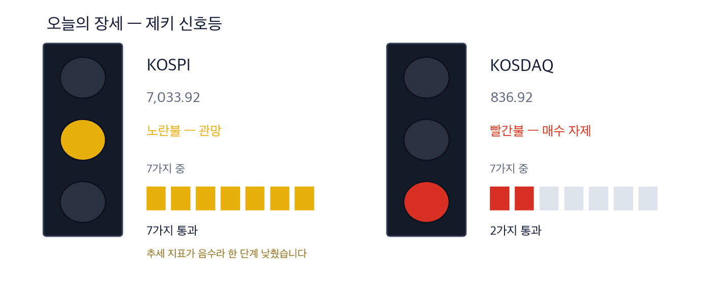
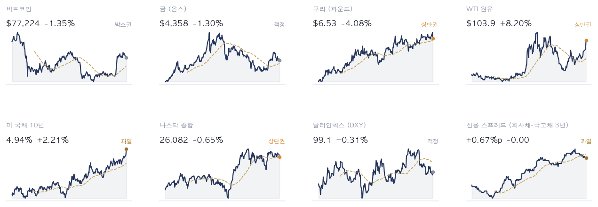
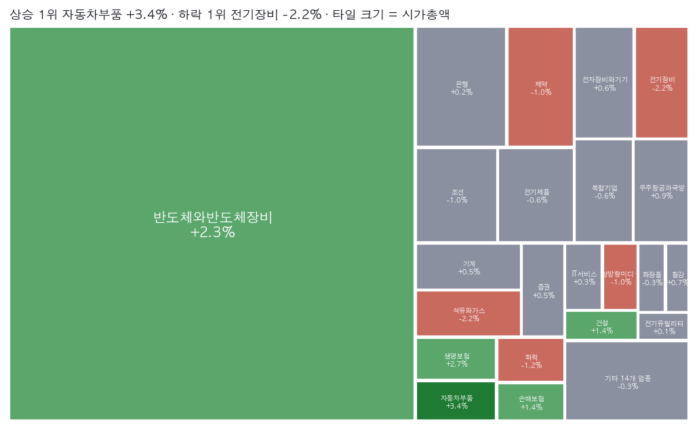
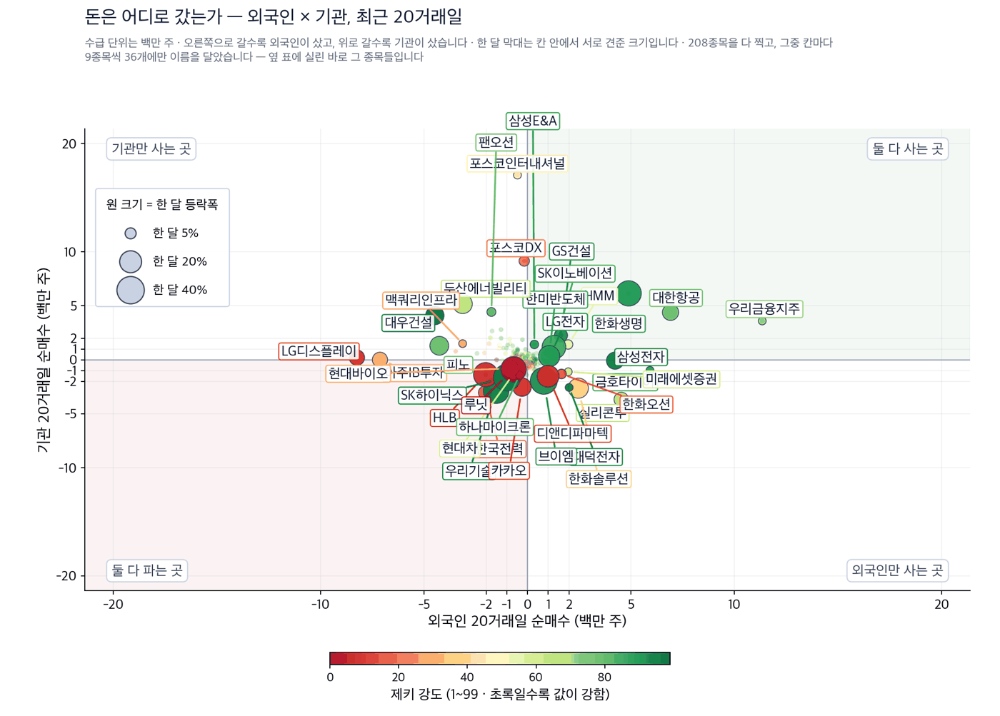
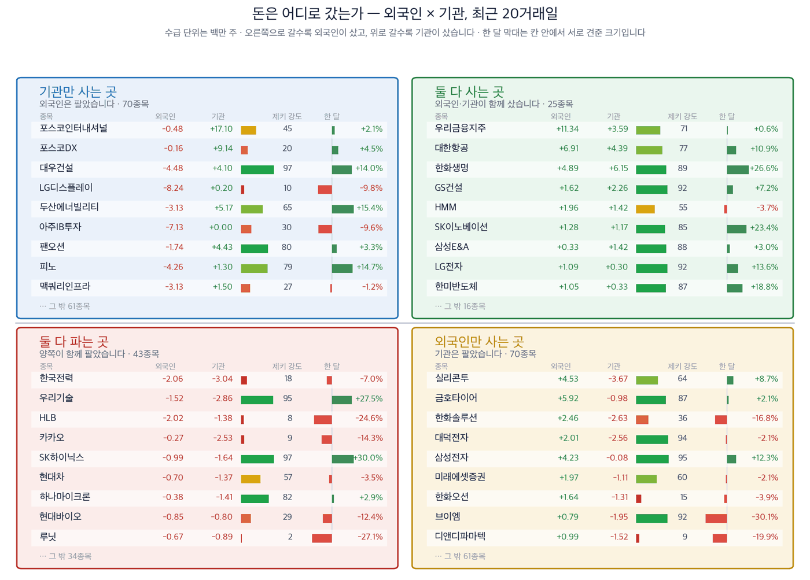
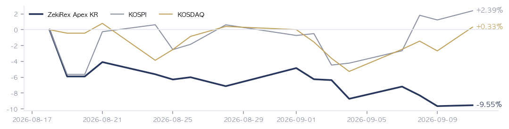

|
ZekiRex™ Apex KR — 2026년 9월 11일
오늘의 판단 · 1/2
데이터 기준 9/10 (KST) 종가 · 간밤 뉴욕 9/10 종가(현지시간) |
ZekiRex™ |
|
|
|
THE REX CALL
서울이 에너지를 판 날 밤에 유가가 100달러를 넘었습니다. 9월 11일 서울은 어제 판 값을 다시 매겨야 합니다.
매수도 매도도 없었습니다. 4개 자리가 모두 차 있고, 팔아야 할 이유가 생긴 종목이 없었습니다.
오늘 반드시 알아야 할 것
1. 미국 30년물 국채금리가 5.35%로 2007년 이후 가장 높았습니다. 10년물은 5% 문턱까지 올랐습니다. 재무부가 60억달러 국채 매입을 내놨지만 금리는 오히려 올랐습니다. (매일경제·블룸버그·마켓워치) 지면은 열지 못해 각 매체가 낸 기사 목록으로 확인했습니다. 2. 국제유가가 급등해 브렌트유와 서부텍사스산원유가 모두 배럴당 100달러를 넘었습니다. (연합뉴스·이데일리) 저희가 재 보면 브렌트유는 7.59% 올라 108.90달러로 마감했습니다. 3. 유럽중앙은행이 예금금리를 연 2.50%로 0.25%포인트 올렸습니다. 이란 전쟁이 물가를 밀어 올리고 있다는 것을 인상의 이유로 밝혔습니다. (매일경제·가디언) 4. 뉴욕 증시가 나흘 연속 내렸습니다. 기름값과 장기금리가 같은 날 오른 것이 배경입니다. (연합뉴스·월스트리트저널) 이 역시 지면은 열지 못했습니다. 5. 9월 10일 서울에서 코스피가 0.25% 내린 7,033.92로, 코스닥이 0.79% 오른 836.92로 닫혔습니다. 유가가 100달러를 넘었다는 소식은 서울이 문을 닫은 뒤에 나왔습니다.
| |
 이 그림 읽는 법 | 켜진 등 | 오늘의 국면입니다. 초록은 매수 우위, 노랑은 관망, 빨강은 매수 자제입니다. | | 채워진 칸 | 7가지 조건 중 몇 개를 통과했는지입니다. 칸이 많이 찰수록 시장 구조가 튼튼합니다. | | 칸이 다 찼는데 노랑·빨강이면 | 다른 이유로 한 단계 낮춘 것입니다. 그림 아래에 그 이유를 적었습니다. |
|
최근 10거래일 국면 추이 (왼쪽이 과거) 방향 — 어디까지 왔나. 이 신호등은 7가지 조건을 세어 정합니다. 코스피는 7가지를 모두 통과했습니다. 그런데 추세 지표가 아직 0 아래에 있어 한 단계 낮춰 노란불로 적었습니다. 남은 것은 추세 하나입니다. 코스닥은 2가지만 통과했고 장기 구조가 무너져 있어 빨간불입니다.
| |
| 오늘의 조치 | | 오늘 신규 매매 없음. 규칙이 요구하지 않는 날에 거래하지 않는 것도 하나의 결정입니다. |
|
| 종목 | 비중 | 평가금액 | 평가손익 | 현재가 | 손절가 | 여유 | 보유일 | 다음 이벤트 | | 한국콜마 | 22% | ₩197,529,800 | −₩9,068,800 | ₩139,400 | ₩134,136 | +3.9% | 13일 | — | | 신한지주 | 23% | ₩212,106,900 | −₩6,922,800 | ₩110,300 | ₩104,788 | +5.3% | 2일 | — | | GS | 26% | ₩239,337,000 | +₩3,451,000 | ₩117,900 | ₩106,904 | +10.3% | 17일 | — | | 샘씨엔에스 | 28% | ₩255,508,200 | +₩19,598,120 | ₩13,950 | ₩11,850 | +17.7% | 17일 | — | | 현금 | — | ₩35,860 | 아직 투자하지 않은 돈입니다 |
계좌 요약 | 시작 자본 | ₩1,000,000,000 | 2026-08-18 설정 | | 실현 손익 | −₩102,539,760 | 판 종목에서 확정된 금액 | | 평가 손익 | +₩7,057,520 | 들고 있는 종목의 장부상 손익 | | 현재 평가액 | ₩904,517,760 | 시작 대비 −9.55% | | 최고 평가액 | ₩1,000,000,000 | 지금은 고점 대비 −9.55% |
시작 자본에 실현 손익과 평가 손익을 더하면 현재 평가액이 됩니다. |
| 관문을 통과한 종목 — 자리가 없어 담지 못한 이름들 | | 금융 4 | | 001450 현대해상 | RS 92 | ₩50,400 | | 005830 DB손해보험 | RS 83 | ₩186,200 | | 086790 하나금융지주 | RS 82 | ₩135,300 | | 105560 KB금융 | RS 81 | ₩173,400 | | 소비 3 | | 192820 코스맥스 | RS 92 | ₩265,000 | | 278470 에이피알 | RS 91 | ₩361,000 | | 073240 금호타이어 | RS 87 | ₩7,680 | | 반도체·하드웨어 2 | | 119850 지엔씨에너지 | RS 94 | ₩51,200 | | 098120 마이크로컨텍솔 | RS 90 | ₩51,000 | | 산업재·인프라 1 | | 028670 팬오션 | RS 80 | ₩5,970 | | 기타 2 | | 317400 자이에스앤디 | RS 98 | ₩10,000 | | 089860 롯데렌탈 | RS 89 | ₩49,100 |
| 왜 못 담았나. 자리는 넷뿐이고 각 자리에 총자산 25%가 들어갑니다 — 한 종목이 −8%에 걸려도 계좌 전체로는 2% 손실이 되도록 맞춘 구조입니다. 자리를 비우는 길은 손절과 오실레이터 이탈 둘뿐이라, 더 좋은 후보가 나와도 갈아타지 않습니다.
이 목록이 뜻하는 것. 15개가 조건을 통과했고 그중 보유 중인 종목을 뺀 12개가 대기 중입니다. RS는 80~98입니다. 우리 4자리는 에너지·정유 1, 반도체·하드웨어 1, 소비 1, 금융 1로 나뉘어 있고 가장 큰 쪽이 에너지·정유입니다 — 그래서 하루 등락이 지수와 평균 2.1%p 벌어졌고, 가장 크게 갈린 9/7 세션에는 코스피 보다 5.6%p 더 내렸습니다. 자리가 하나 열리면 이 순서의 맨 위부터 검토합니다. 매수 추천이 아닙니다. |
조건은 통과했지만 품질 하한에서 걸린 종목 | 에이피알 278470 — 품질 하한 미달 | | 롯데렌탈 089860 — 재무 등급 SMR E — 품질 하한 미달 | | 금호타이어 073240 — 품질 하한 미달 | | DB손해보험 005830 — 품질 하한 미달 |
|
| 핵심 지표 | 코스피 7,034 -0.25% · 고점 −22.8% 0.25% 내린 7,033.92로 7,000선을 지켰습니다. 저희가 세는 7가지 조건을 모두 통과했는데도 추세 지표가 0 아래라 신호등은 노란불입니다. 조건은 채워졌고 추세만 남았습니다. 박스권 | 코스닥 837 +0.79% · 고점 −31.7% 0.79% 올라 836.92입니다. 7가지 가운데 2가지만 통과해 빨간불이며 장기 구조가 아직 무너져 있습니다. 하루 반등과 구조는 다릅니다. 박스권 | 원/달러 ₩1,350.60 과매도 | 국고채 3년 3.93% 과열 | S&P 500 7,592 상단권 | 포트폴리오 -9.55% 현금 0% · 보유 4종목 4개 자리를 모두 쓰고 있어 새로 담지 않았습니다. 설정 이후 9.55% 손실이며 같은 기간 코스피는 2.39% 올랐습니다. 코스닥은 0.33% 올랐습니다. 설정 이후 |
|
| 한 줄 정리: 9월 9일과 10일 판을 보내 드리지 못했습니다. 양해를 구합니다. 9월 10일 서울은 조용했습니다. 코스피가 0.25% 내린 7,033.92로 닫혀 7,000선을 지켰습니다. 코스닥은 0.79% 올라 836.92입니다. 조용한 것은 지수였고, 안쪽에서는 에너지가 팔렸습니다. 에쓰오일이 6.63% 내렸고 보유 중인 GS가 3.44% 내렸습니다. 그로부터 몇 시간 뒤 뉴욕 9월 10일 장(현지시간)에서 국제유가가 6% 넘게 올랐습니다. 브렌트유와 서부텍사스산원유가 모두 배럴당 100달러를 넘었습니다. 저희가 재 보면 브렌트유는 7.59% 올라 108.90달러로 마감했습니다. 서울은 그 소식이 오기 전에 에너지를 팔았습니다. |
|
|
|
판단의 근거 · 2/2
데이터 기준 9/10 (KST) 종가 · 간밤 뉴욕 9/10 종가(현지시간) |
ZekiRex™ |
|
|
| 오늘 반드시 알아야 할 것 |
|
값보다 시계가 먼저입니다. 서울이 닫은 뒤에 유가가 움직였습니다
9월 10일 서울과 뉴욕은 같은 사건을 다른 순서로 만났습니다. 서울은 오후 3시 30분에 닫았고, 그때까지 유가는 100달러를 넘지 않았습니다. 그 장에서 에쓰오일이 6.63%, GS가 3.44% 내렸습니다. 뉴욕 9월 10일 장(현지시간)에서 브렌트유가 7.59% 올라 108.90달러로 마감했습니다. 같은 날 미국 30년물 국채금리는 5.35%까지 올랐습니다. 기름값과 장기금리가 함께 오르면 원가와 할인율이 동시에 깎입니다. 그래서 뉴욕 증시는 나흘 연속 내렸습니다. 왜 그런가. 왜 서울이 먼저 팔았는지는 보도가 엇갈립니다. 매일경제는 9월 10일 서울이 유가와 금리와 동시만기 부담을 안고도 7,000선을 지켰다고 전했습니다. 지면은 열지 못해 기사 목록으로 확인했습니다. 저희 자료로는 그 장에서 에너지가 가장 많이 팔린 자산입니다. 지수는 버텼는데 1위 업종이 팔린 것입니다. 석유와가스는 평균 제키 강도 91.0으로 업종 순위 1위이고, 그 순위는 9월 10일 마감으로 계산됐습니다. 강한 업종이 강한 소식 직전에 팔린 것이 이날의 어긋남입니다. 다음에 무엇이. 다음에 볼 것은 9월 11일 서울이 에너지를 어느 쪽으로 받는지입니다. 브렌트유가 100달러 위에 있는데 석유와가스가 업종 1위를 지키면 저희 판단이 맞습니다. 1위에서 내려가면 틀린 것입니다.
보도 대 우리 데이터 | MK Markets 기름값 100달러를 넘자 정유가 오르고 항공이 내렸다 → 저희 자료는 이 해석과 어긋납니다. 9월 10일 서울 마감에서 에쓰오일이 6.63%, GS가 3.44% 내렸습니다. 유가가 100달러를 넘은 것은 서울이 닫은 뒤 뉴욕 장(현지시간)에서입니다. |
그래서 우리는: 정유주나 항공주를 들고 계신 독자라면 순서를 보실 필요가 있습니다. 9월 10일 서울 값은 유가 100달러를 모르는 값입니다. 9월 11일 서울은 그 값을 다시 매기게 됩니다. 반대쪽도 함께 보셔야 합니다. 원유는 달러로 사 오므로 원화가 약해진 만큼 원가 부담이 더해집니다. 그리고 유가는 하루 만에 되돌릴 수 있지만 운임과 보험료는 몇 달 단위로 다시 매겨집니다. 값이 먼저 움직일지 물량이 먼저 움직일지가 정유와 항공의 손익을 가릅니다.
Rex Lens™
| |
| 그 밖에 알아야 할 것 | | 트럼프의 5,000달러 공약 · 트럼프 대통령이 공화당이 중간선거에서 이기면 성인 시민에게 5,000달러씩 주겠다고 밝혔습니다. 재원은 관세 수입이라고 했습니다. → 지급이 성사되면 1,600조원 규모의 재정 지출이 됩니다. 국채 발행이 늘어나는 쪽이므로 지금 오르고 있는 장기금리와 같은 방향입니다. | | 한국은행의 경고 · 한국은행이 고위험 인공지능 관련 거래가 시장을 불안정하게 만들 수 있다고 경고했습니다. 어떤 거래를 말하는지도 함께 밝혔습니다. → 중앙은행이 특정 거래 유형을 이름 지어 경고하는 것은 규제가 뒤따를 수 있다는 신호입니다. 관련 상장지수펀드를 담고 있다면 조건 변경 여부를 확인할 자리입니다. | | 엔화와 캐리 청산 · 일본은행의 정책 변경 기대로 엔화가 급등했습니다. 엔을 빌려 다른 자산을 사 둔 거래가 되감길 수 있다는 긴장이 커졌다고 경향신문이 전했습니다. → 되감김이 시작되면 파는 쪽은 가장 많이 오른 자산부터 팔립니다. 지난 1년 자료로는 그 시기 한국 성장주가 함께 흔들렸습니다. | | 미국의 캐나다 수입 금지 · 미국이 캐나다산 유제품과 주류, 오토바이의 수입을 금지했습니다. 무역 분쟁이 한 단계 더 넓어졌다고 가디언이 전했습니다. → 품목을 하나씩 끊는 방식은 대상 국가를 바꿔 되풀이될 수 있습니다. 대미 수출 비중이 큰 한국 제조업체를 보는 분이라면 품목 단위 조치를 함께 보실 자리입니다. | | 2027년 경유 전망 · 미국 에너지부가 2027년 경유 가격 전망을 갤런당 33센트 올렸습니다. 중동의 무력 충돌이 길어지는 것을 전제로 한 조정이라고 악시오스가 전했습니다. → 정부 기관이 2027년까지 내다보며 올린 것은 이번 상승을 일시적으로 보지 않는다는 뜻입니다. 운송비를 원가로 안는 업종의 내년 이익 추정에 걸리는 문제입니다. |
| 한국과 미국을 잇는 것: 9월 10일 뉴욕에서 오른 것은 기름값만이 아니라 돈을 빌리는 값이기도 했습니다. 한국에는 이 조합이 가장 까다롭습니다. 사 오는 원유 값이 오르는 동시에 미국 금리가 원화를 끌어내립니다. 같은 물량을 들여오는 데 드는 원화가 두 번 늘어난다는 뜻입니다. 서울이 9월 11일에 볼 자리는 지수의 방향이 아니라, 정유와 해운과 항공이 이 원가를 어떻게 나눠 지는지입니다. |
 Rex Pulse™ — 지수·가상자산 / 통화 / 원자재 / 채권 16종, 1년 추이와 50일 이동평균(점선) · 기준 한국 9/10 종가, 뉴욕 9/10 종가(현지시간) |
저희가 시장에 매기는 신호등은 노란불입니다. 코스피는 7가지 조건을 모두 통과했는데도 색이 올라가지 않았습니다. 추세 지표가 아직 0 아래에 있어 한 단계 낮췄기 때문입니다. 조건은 채워졌고 추세만 따라오지 못한 상태라는 뜻입니다. 이런 자리에서는 하루치 상승이 자주 되돌아오므로 저희는 새로 담지 않습니다. 코스닥은 2가지만 통과해 빨간불입니다. 색이 올라가려면 추세 지표가 0 위로 올라와야 합니다. |
 색은 당일 등락(짙을수록 큼), 타일은 시가총액입니다. 상단에 당일 상승·하락 1위가 적혀 있고, 큰 칸이 움직인 날이 지수가 움직인 날이라는 뜻입니다 — 아래 리더십 순위(추세의 힘)와 함께 읽으십시오. |
| 리더십 — 업종 강세 순위 | 강세 상위 | 업종 | 강도 / 자금 | 차이 | | 01 | 석유와가스 | | +43 | | 02 | 반도체와반도체장비 | | +30 | | 03 | 건설 +2 | | +0 | | 04 | 전기장비 | | +30 | | 05 | 복합기업 +5 | | +14 | | 06 | 은행 | | +3 |
| 약세 하위 | 업종 | 강도 / 자금 | 차이 | | 01 | 생물공학 -1 | | -19 | | 02 | 조선 | | -28 | | 03 | 호텔,레스토랑,레저 +1 | | -51 | | 04 | 건강관리장비와용품 | | -11 | | 05 | 게임엔터테인먼트 -1 | | +10 |
|
| | 업종을 9월 10일 서울 종가 기준 강세 순으로 세운 뒤 위 5개와 아래 5개를 실었고, 본문이 지목했거나 보유 중인 업종을 더했습니다. 위쪽은 석유와가스, 생명보험, 반도체와반도체장비, 건설, 전기장비입니다. 1위 석유와가스는 평균 제키 강도 91.0으로 2위와 5.0 차이입니다. 아래쪽은 조선, 건강관리기술, 생명과학도구및서비스, 양방향미디어와서비스, 생물공학입니다. 위와 아래의 차이는 분명합니다. 값이 원자재와 금리에 붙어 있는 업종이 위에 있고, 미래 이익에 붙어 있는 업종이 아래에 있다는 뜻입니다. 장기금리가 오르면 뒤쪽의 할인율 부담이 커지므로 이 배열이 유지됩니다. 그래서 봐야 할 것은 순위 자체가 아니라, 금리가 5%를 넘고도 이 배열이 그대로인지입니다. | | 수급 — 외국인·기관은 어느 쪽이었나 |  이 그림 읽는 법 | 점 하나 | 종목 하나입니다. 가로·세로 위치가 두 값을 그대로 나타내고, 가운데 가로·세로로 그어진 두 선이 기준선입니다. 네 귀퉁이의 이름표가 그 칸의 뜻입니다. | | 점 크기 | 최근 한 달 등락폭입니다. 오르든 내리든 크게 움직였으면 큰 점입니다. | | 점 색 | 제키 강도입니다. 초록일수록 주가가 시장에서 강합니다. | | 30종목만 | 이름이 겹치면 못 읽기 때문입니다. 가운데 몰린 나머지는 움직임이 거의 없는 종목들이라 뺐습니다. |
 이 그림 읽는 법 | 네 칸 | 가로와 세로 두 값이 각각 기준선을 넘었는지로 넷을 가릅니다. 오른쪽 위는 둘 다 넘은 곳, 왼쪽 아래는 둘 다 못 넘은 곳, 나머지 두 칸은 한쪽만 넘은 곳입니다. 칸 이름이 그 칸에 든 종목의 상태를 한 문장으로 적어 둔 것입니다. | | 가운데 두 칸 | 두 기간을 견주는 자리입니다. 글자 A~E가 있으면 이 업계가 쓰는 표준 등급으로, A는 강한 매수, B는 매수 우세, C는 매수와 매도가 반반, D는 매도 우세, E는 강한 매도를 뜻합니다(전체를 다섯으로 나눈 순위라 A가 상위 20%입니다). 숫자가 있으면 그 기간의 순매수 규모입니다. | | 칸마다 9종목 | 그 칸에서 움직임이 가장 큰 순서입니다. 나머지는 칸 아래에 몇 종목인지만 적었습니다. 옆 산점도가 이름을 다는 종목이 바로 이 9종목씩입니다. | | 한 달 막대 | 0을 가운데 두고 오른쪽이 상승, 왼쪽이 하락입니다. 길이는 같은 칸 안에서만 서로 견주십시오 — 칸마다 기준이 다릅니다. | | 제키 강도 | 1~99 순위입니다. 막대가 길수록, 초록에 가까울수록 그 종목의 주가가 시장에서 강합니다. |
이름을 확인한 종목 전부를 넷으로 갈랐습니다. 오른쪽으로 갈수록 외국인이 샀고, 위로 갈수록 기관이 샀습니다. 지금 누가 사고 있는지를 보여 주는 자리이지 무엇을 사라는 자리가 아닙니다. |
| Rex 25™ — 당일 등락률 전체 순위 | | 01 073240 금호타이어+8.17% | | 02 098120 마이크로컨텍솔+6.47% | | 03 119850 지엔씨에너지+6.00% | | 04 ● 252990 샘씨엔에스+4.65% | | 05 001450 현대해상+2.86% | | 06 086790 하나금융지주+0.97% | | 07 089860 롯데렌탈+0.82% | | 08 105560 KB금융+0.81% | | 09 005830 DB손해보험+0.05% | | 10 317400 자이에스앤디-0.10% | | 11 ● 055550 신한지주-0.27% | | 12 192820 코스맥스-0.56% | | 13 028670 팬오션-0.67% | | 14 278470 에이피알-2.04% | | 15 ● 078930 GS-3.44% |
| 616종목 가운데 15개가 저희 기준을 넘었습니다. 그 15개의 성격이 이날의 이야기입니다. 은행과 보험이 5개, 정유 지주사 GS와 해운사 팬오션이 각각 1개씩 들어 있습니다. 기름값과 장기금리가 함께 오르면 이익이 늘어나는 쪽이 명단의 절반입니다. 그런데 이 명단은 유가가 100달러를 넘기 전인 9월 10일 마감으로 계산됐습니다. 삼성전자와 SK하이닉스는 들어 있지 않습니다. 명단이 이미 한쪽에 서 있다는 뜻입니다. 그래서 봐야 할 것은 명단의 길이가 아니라 방향입니다. 9월 11일에 이 15개가 함께 오르면 저희 기준이 유가를 먼저 읽은 것이고, 함께 내리면 그 반대입니다. | | 15종목뿐입니다. 25자리 가운데 오늘 조건을 만족한 것이 15개라는 뜻이고, 빈자리는 채우지 않습니다. ● 표시가 우리 보유 종목입니다. 순서는 등락률만 따릅니다 — 하락 상위에 보유 종목이 있어도 그 자체가 매도 신호는 아닙니다. 매도는 −8% 손절과 오실레이터 이탈, 둘뿐입니다. |
| 보유 비중 — 하한 8% / 진입 25% | | 샘씨엔에스 25299028.2% | | GS 07893026.5% | | 신한지주 05555023.4% | | 한국콜마 16189021.8% |
25%는 진입 시점의 크기이지 보유 한도가 아닙니다. 오른 종목을 크다는 이유로 줄이지 않습니다. |
| Rex Radar™ — 앞으로의 일정 | | 이번 주의 핵심 — 이번 주에 가장 무거운 것은 미국 장기금리입니다. 30년물이 5.35%로 2007년 이후 가장 높고 10년물은 5% 문턱에 있습니다. 재무부가 60억달러를 사들였는데도 금리가 올랐다는 것이 이번 주의 새로운 사실입니다. 여기에 9월 11일 미국 8월 소비자물가가 겹칩니다. | | 9/11 (금) 21:30 KST | 미국 8월 소비자물가 (미국 9/11 금 08:30 ET, 현지시간)핵심 기름값이 오른 달의 물가라 장기금리가 5%를 넘느냐가 여기서 갈립니다. 볼 숫자: 미국 10년물이 5.00%를 넘어서는지 봅니다. | | 9/11 (금) 15:30 KST | 서울 증시 마감 — 유가 100달러를 처음 반영하는 장핵심 9월 10일 서울 값은 유가 100달러를 모르는 값이었습니다. 볼 숫자: GS가 117,900원 위로 올라오는지 봅니다. |
|
|
 설정 이후 누적 수익률입니다. 계좌 −9.55%, 코스피 +2.39%, 코스닥 +0.33%입니다. 직전에 기록한 값은 계좌 −9.66%, 코스피 +1.23%였습니다. 그 사이 두 거래일 동안 계좌는 거의 그대로였고 코스피는 올랐습니다. 그림이 보여 주는 것은 수준이 아니라 벌어진 간격이며, 그 간격은 더 넓어졌습니다. 간격이 좁아지려면 보유 4종목이 지수보다 더 올라야 한다는 뜻입니다. |
| 2026-09-10 종가 기준 심사 대상 616종목 가운데 15종목이 조건을 통과했습니다. 조건 통과는 매수 추천이 아닙니다. |
| 출처: 한국거래소(KRX) 공시 시세, 15:30 종가 · 서울외국환중개 고시환율(네이버 금융) · 야후 파이낸스 · 네이버 금융 |
|
본 리포트는 정보 제공 목적이며 개별 투자 자문이 아닙니다. ZekiRex™ Apex KR는 10억 원 규모의 모의 포트폴리오를 규칙 기반으로 운용합니다 — 실제 계좌도, 주문도, 체결도 없습니다. 표시된 성과에는 수수료와 세금, 매매 시 가격 미끄러짐이 반영되지 않았습니다. 종목 자료에는 상장폐지된 회사가 빠져 있습니다. 그래서 성과가 실제보다 높게 나오는 치우침(생존편향)이 있습니다. 과거의 성과는 미래를 보장하지 않으며, 투자에는 원금 손실 위험이 따릅니다. |
| This is the Rex Way, ZekiRex™ |
|